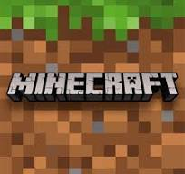
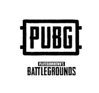

좋아하는 게임 소개


발로란트
5대5 전술 슈팅 게임.
쉬운 조작감이 좋지만 많은 스킬로 인한
전술 문제로 처음할떄 어려움을 겪을 수 있다.
마인크래프트
오픈월드 비디오 게임.
오픈월드 답게 다양한 플레이 스타일로
플레이어의 창작성을 표현하기에 좋다.
배틀그라운드
실시간 배틀로얄 게임.
고각, 저각에 따라 유리한 각으로 교전할 수 있다는
장점이면서도 초보자에겐 어렵다는 단점이 있다.